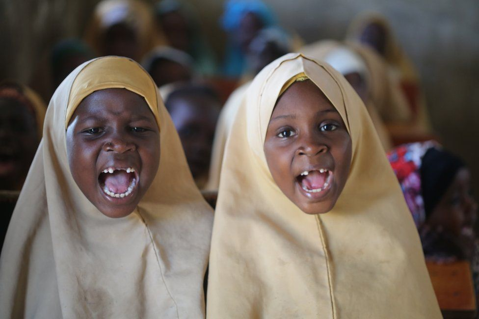

World in Pictures
-
In Pictures
Wintry frozen lake voted best photograph
Cristiano Vendramin triumphed with an image of a frozen landscape, taken in memory of a lost friend.
Read More -
US
The head-turning outfits at the Brits
Many stars opted to wear a black cut-out dress but there were still plenty of pops of red carpet colour.
Read More -
 In Pictures
In PicturesUnderwater Photographer of the Year winner revealed
Rafael Fernandez Caballero is named overall winner for his image of whale sharks in the Maldives.
Read More -
In Pictures
Kebab seller image wins world food photo contest
A photo of a street food vendor has won Pink Lady Food Photographer of the Year 2022.
Read More
-
 In Pictures
In PicturesArtist creates Valentine's Day light paintings
Photographer Kevin Jay uses a light source to "paint" the images on the landscape.
Read More -

In Pictures
Africa's top shots: Gap-toothed smiles and snail dye
A selection of the best photos from across the African continent this week.
Read More -
 In Pictures
In PicturesCrossing the world's deepest lake
Oleg Boldyrev's photographs capture the frozen landscape of Lake Baikal, in Siberia.
Read More -
In Pictures
'One gig changed the trajectory of my life'
Photographer to the stars Conor McDonnell explains how a cheeky request opened the door to a career.
Read More